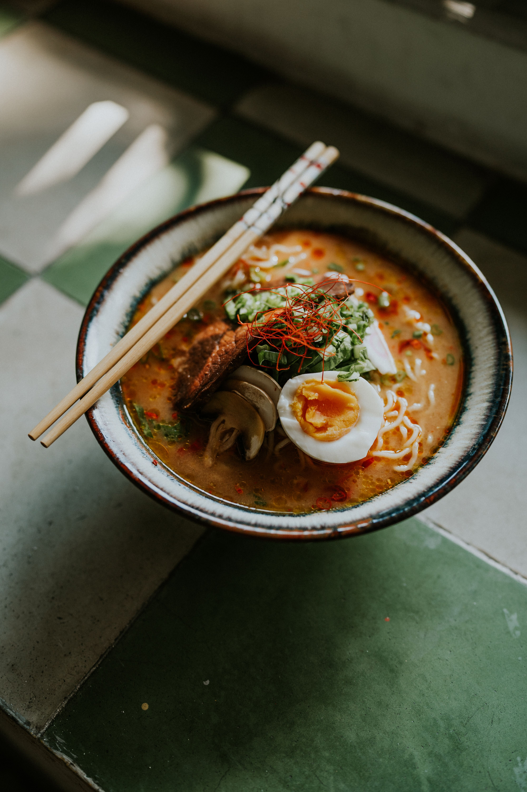

Ramen

Description
Ramen is a Japanese noodle dish. It is a part of Japanese Chinese cuisine. It includes Chinese-style alkaline wheat noodles served in several flavors of hot broth.
Common flavors are soy sauce and miso, with typical toppings including sliced pork (chāshū), nori (dried seaweed), lacto-fermented bamboo shoots (menma), narutomaki, and scallions. Nearly every region in Japan has its own variation of ramen, such as the tonkotsu (pork bone broth) ramen of Kyushu and the miso ramen of Hokkaido.
Ingredients
- 1 cup instant ramen noodles
- 4 cups chicken or vegetable broth
- 2 eggs
- 1 cup sliced pork (chāshū)
- 1 sheet dried seaweed (nori)
- 1 cup lacto-fermented bamboo shoots (menma)
- 1 cup narutomaki
- 1 cup chopped scallions
Steps
- In a large pot, bring the broth to a boil.
- Add the ramen noodles and cook according to package instructions.
- While the noodles are cooking, prepare the other ingredients.
- Gently fold the eggs into the broth.
- Serve the ramen in bowls and top with the prepared ingredients.
Home